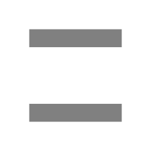
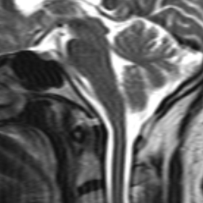

Scan percentage

To reduce scan time, the peripheral or outer part of K-space is not scanned. Not scanning these high frequency lines results in loss of spatial resolution. Due to the abrupt border between the part that is scanned and the part just filled with zero, ringing or truncation occurs.
 The blue part of K-space is not scanned. In this example a scan percentage of 40% is used which means that only 40% of K-space is scanned. To reduce ringing the abrupt border between data and the blue part can be smoothened by applying filters.
The blue part of K-space is not scanned. In this example a scan percentage of 40% is used which means that only 40% of K-space is scanned. To reduce ringing the abrupt border between data and the blue part can be smoothened by applying filters.
Voxel size
Instead of specifying the percentage of K-space to acquire, it makes more sense to directly specify the resolution in the phase encoding direction. The scan percentage is calculated as:
Voxelsize(frequency) / Voxelsize(phase).
Exercise
Apply a scan percentage of roughly somewhere in between 50%-75% until the ringing is clearly visible in the spinal cord. Then apply a "Hanning" filter and see how the truncation disappears and how this effects the resolution in the image.

From left to right: A) original image B) 60% scan percentage C) 60% scan percentage and 50% Hanning filter.
See "Hanning" filter for an example of such ringing filtering.